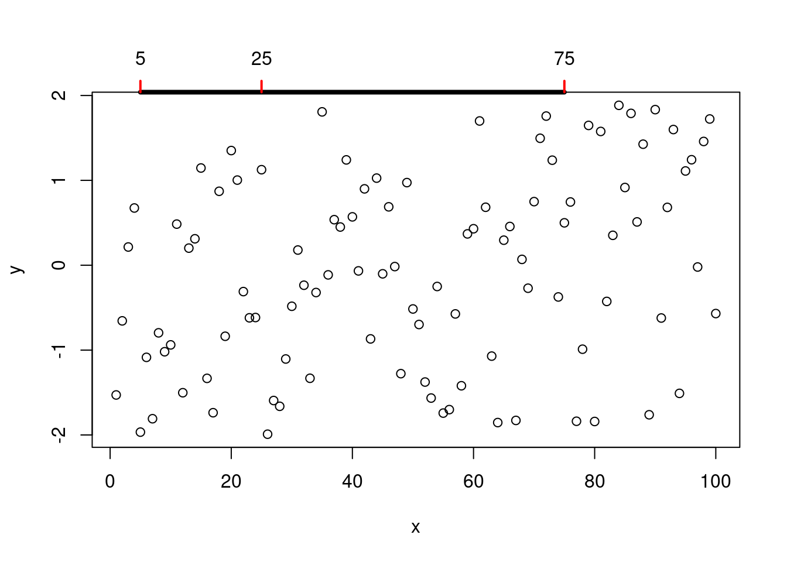

10.1 绘图基本要素
10.1.1 点线
点和线是最常见的画图元素，在 plot 函数中，分别用参数 pch 和 lty 来设定类型，点的大小、线的宽度分别用参数 cex 和 lwd 来指定，颜色由参数 col 设置。参数 type 不同的值设置如下，p 显示点，l 绘制线，b 同时绘制空心点，并用线连接，c 只有线，o 在线上绘制点，s 和 S 点线连接绘制阶梯图，h 绘制类似直方图一样的垂线，最后 n 表示什么也不画。
点 points 、线 grid 背景线 abline lines rug 刻度线（线段segments、箭头arrows）、
## -------- Showing all the extra & some char graphics symbols ---------
pchShow <-
function(extras = c("*", ".", "o", "O", "0", "+", "-", "|", "%", "#"),
cex = 2, ## good for both .Device=="postscript" and "x11"
col = "red3", bg = "gold", coltext = "brown", cextext = 1.2,
main = paste(
"plot symbols : points (... pch = *, cex =",
cex, ")"
)) {
nex <- length(extras)
np <- 26 + nex
ipch <- 0:(np - 1)
k <- floor(sqrt(np))
dd <- c(-1, 1) / 2
rx <- dd + range(ix <- ipch %/% k)
ry <- dd + range(iy <- 3 + (k - 1) - ipch %% k)
pch <- as.list(ipch) # list with integers & strings
if (nex > 0) pch[26 + 1:nex] <- as.list(extras)
plot(rx, ry, type = "n", axes = FALSE, xlab = "", ylab = "", main = main)
abline(v = ix, h = iy, col = "lightgray", lty = "dotted")
for (i in 1:np) {
pc <- pch[[i]]
## 'col' symbols with a 'bg'-colored interior (where available) :
points(ix[i], iy[i], pch = pc, col = col, bg = bg, cex = cex)
if (cextext > 0) {
text(ix[i] - 0.3, iy[i], pc, col = coltext, cex = cextext)
}
}
}
pchShow()
图 10.1: 不同的 pch 参数值
## ------------ test code for various pch specifications -------------
# Try this in various font families (including Hershey)
# and locales. Use sign = -1 asserts we want Latin-1.
# Standard cases in a MBCS locale will not plot the top half.
TestChars <- function(sign = 1, font = 1, ...) {
MB <- l10n_info()$MBCS
r <- if (font == 5) {
sign <- 1
c(32:126, 160:254)
} else if (MB) 32:126 else 32:255
if (sign == -1) r <- c(32:126, 160:255)
par(pty = "s")
plot(c(-1, 16), c(-1, 16),
type = "n", xlab = "", ylab = "",
xaxs = "i", yaxs = "i",
main = sprintf("sign = %d, font = %d", sign, font)
)
grid(17, 17, lty = 1)
mtext(paste("MBCS:", MB))
for (i in r) try(points(i %% 16, i %/% 16, pch = sign * i, font = font, ...))
}
TestChars()
图 10.2: pch 支持的字符
try(TestChars(sign = -1))
图 10.3: pch 支持的字符
TestChars(font = 5) # Euro might be at 160 (0+10*16).图 10.4: pch 支持的字符
# macOS has apple at 240 (0+15*16).
try(TestChars(-1, font = 2)) # bold
图 10.5: pch 支持的字符
x <- 0:12
y <- sin(pi / 5 * x)
par(mfrow = c(3, 3), mar = .1 + c(2, 2, 3, 1))
for (tp in c("p", "l", "b", "c", "o", "h", "s", "S", "n")) {
plot(y ~ x, type = tp, main = paste0("plot(*, type = \"", tp, "\")"))
if (tp == "S") {
lines(x, y, type = "s", col = "red", lty = 2)
mtext("lines(*, type = \"s\", ...)", col = "red", cex = 0.8)
}
}
图 10.6: 不同的 type 参数值
颜色 col 连续型和离散型
线帽/端和字体的样式
# 合并为一个图 三条粗横线 横线上三种字形
plot(c(1, 20), c(1, 20), type = "n", ann = FALSE)
lines(x = c(5, 15), y = c(5, 5), lwd = 15, lend = "round")
text(10, 5, "Hello, Helvetica", cex = 1.5, family = "sans", pos = 1, offset = 1.5)
text(5, 5, "sans", cex = 1.5, family = "sans", pos = 2, offset = .5)
text(15, 5, "lend = round", pos = 4, offset = .5)
lines(x = c(5, 15), y = c(10, 10), lwd = 15, lend = "butt")
text(10, 10, "Hello, Helvetica", cex = 1.5, family = "mono", pos = 1, offset = 1.5)
text(5, 10, "mono", cex = 1.5, family = "mono", pos = 2, offset = .5)
text(15, 10, "lend = butt", pos = 4, offset = .5)
lines(x = c(5, 15), y = c(15, 15), lwd = 15, lend = "square")
text(10, 15, "Hello, Helvetica", cex = 1.5, family = "serif", pos = 1, offset = 1.5)
text(5, 15, "serif", cex = 1.5, family = "serif", pos = 2, offset = .5)
text(15, 15, "lend = square", pos = 4, offset = .5)
图 10.7: 不同的线端样式
lend：线端的样式，可用一个整数或字符串指定：
- 0 或 “round” 圆形（默认）
- 1 或 “butt” 对接形
- 2 或 “square” 方形
10.1.2 区域
矩形，多边形，曲线交汇出来的区域 面（矩形rect，多边形polygon）、路径 polypath 面/多边形 rect 颜色填充
# From the manual
ch.col <- c(
"rainbow(n, start=.7, end=.1)",
"heat.colors(n)",
"terrain.colors(n)",
"topo.colors(n)",
"cm.colors(n)"
) # 选择颜色
n <- 16
nt <- length(ch.col)
i <- 1:n
j <- n / nt
d <- j / 6
dy <- 2 * d
plot(i, i + d,
type = "n",
yaxt = "n",
ylab = "",
xlab = "",
main = paste("color palettes; n=", n)
)
for (k in 1:nt) {
rect(i - .5, (k - 1) * j + dy, i + .4, k * j,
col = eval(parse(text = ch.col[k]))
) # 咬人的函数/字符串解析为/转函数
text(2 * j, k * j + dy / 4, ch.col[k])
}
图 10.8: rect 函数画长方形
clip(x1, x2, y1, y2) 在用户坐标中设置剪切区域
x <- rnorm(1000)
hist(x, xlim = c(-4, 4))
usr <- par("usr")
clip(usr[1], -2, usr[3], usr[4])
hist(x, col = "red", add = TRUE)
clip(2, usr[2], usr[3], usr[4])
hist(x, col = "blue", add = TRUE)
do.call("clip", as.list(usr)) # reset to plot regionmy.col <- function(f, g, xmin, xmax, col, N = 200,
xlab = "", ylab = "", main = "") {
x <- seq(xmin, xmax, length = N)
fx <- f(x)
gx <- g(x)
plot(0, 0,
type = "n",
xlim = c(xmin, xmax),
ylim = c(min(fx, gx), max(fx, gx)),
xlab = xlab, ylab = ylab, main = main
)
polygon(c(x, rev(x)), c(fx, rev(gx)),
col = "#EA4335", border = 0
)
lines(x, fx, lwd = 3, col = "#34A853")
lines(x, gx, lwd = 3, col = "#4285f4")
}
my.col(function(x) x^2, function(x) x^2 + 10 * sin(x),
-6, 6,
main = "The \"polygon\" function"
)
图 10.9: 区域重叠 polygon 函数
各种符号 10.10
plot(0, 0,
xlim = c(1, 5), ylim = c(-.5, 4),
axes = F,
xlab = "", ylab = ""
)
for (i in 0:4) {
for (j in 1:5) {
n <- 5 * i + j
points(j, i,
pch = n,
cex = 3
)
text(j, i - .3, as.character(n))
}
}
图 10.10: cex 支持的符号
点、线、多边形和圆聚集在图 10.11 中
# https://jeroen.github.io/uros2018/#23
plot.new()
plot.window(xlim = c(0, 100), ylim = c(0, 100))
polygon(c(10, 40, 80), c(10, 80, 40), col = "hotpink")
text(40, 90, labels = "My drawing", col = "navyblue", cex = 3)
symbols(c(70, 80, 90), c(20, 50, 80),
circles = c(10, 20, 10),
bg = c("#4285f4", "#EA4335", "red"), add = TRUE, lty = "dashed"
)
图 10.11: 多边形和符号元素
在介绍各种统计图形之前，先介绍几个绘图函数 plot 和 text 还有 par 参数设置， 作为最简单的开始，尽量依次介绍其中的每个参数的含义并附上图形对比。
y <- x <- 1:4
plot(x, y, ann = F, col = "blue", pch = 16)
text(x, y,
labels = c("1st", "2nd", "3rd", "4th"),
col = "red", pos = c(3, 4, 4, 1), offset = 0.6
)
ahat <- "sigma"
# title(substitute(hat(a) == ahat, list(ahat = ahat)))
title(bquote(hat(a) == .(ahat)))
图 10.12: pos 位置参数
其中 labels， pos 都是向量化的参数
10.1.3 参考线
矩形网格线是用做背景参考线的，常常是淡灰色的细密虚线，plot 函数的 panel.first 参数和 grid 函数常用来画这种参考线
# modified from https://yihui.name/cn/2018/02/cohen-s-d/
n <- 30 # 样本量（只是一个例子）
x <- seq(0, 12, 0.01)
par(mar = c(4, 4, 0.2, 0.1))
plot(x / sqrt(n), 2 * (1 - pt(x, n - 1)),
xlab = expression(d = x / sqrt(n)),
type = "l", panel.first = grid()
)
abline(v = c(0.01, 0.2, 0.5, 0.8, 1.2, 2), lty = 2)
图 10.13: 添加背景参考线
10.1.4 坐标轴
图形控制参数默认设置下 par 通常的一幅图形，改变坐标轴标签是很简单的
x <- 1:100
y <- runif(100, -2, 2)
plot(x, y)
plot(x, y, xlab = "Index", ylab = "Uniform draws")
改变坐标轴标签和标题
op <- par(no.readonly = TRUE) # 保存默认的 par 设置
par(cex.lab = 1.5, cex.axis = 1.3)
plot(x, y, xlab = "Index", ylab = "Uniform draws")
# 设置更大的坐标轴标签内容
par(mar = c(6, 6, 3, 3), cex.axis = 1.5, cex.lab = 2)
plot(x, y, xlab = "Index", ylab = "Uniform draws")
使用 axis 函数可以更加精细地控制坐标轴
par(op) # 恢复默认的 par 设置
plot(x, y, xaxt = "n") # 去掉 x 轴
axis(side = 1, at = c(5, 50, 100)) # 添加指定的刻度标签
指定刻度标签的内容
plot(x, y, yaxt = "n")
axis(side = 2, at = c(-2, 0, 2), labels = c("Small", "Medium", "Big"))
控制刻度线和轴线和刻度标签
plot(x, y)
axis(side = 3, at = c(5, 25, 75), lwd = 4, lwd.ticks = 2, col.ticks = "red")
还可以把 box 移除，绘图区域的边框去掉，只保留坐标轴
plot(x, y, bty = "n", xaxt = "n", yaxt = "n")
axis(side = 1, at = seq(0, 100, 20), lwd = 3)
axis(side = 2, at = seq(-2, 2, 2), lwd = 3)
# 双Y轴
N <- 200
x <- seq(-4, 4, length = N)
y1 <- sin(x)
y2 <- cos(x)
op <- par(mar = c(5, 4, 4, 4)) # Add some space in the right margin
# The default is c(5,4,4,2) + .1
xlim <- range(x)
ylim <- c(-1.1, 1.1)
plot(x, y1,
col = "blue", type = "l",
xlim = xlim, ylim = ylim,
axes = F, xlab = "", ylab = "", main = "Title"
)
axis(1)
axis(2, col = "blue")
par(new = TRUE)
plot(x, y2,
col = "red", type = "l",
xlim = xlim, ylim = ylim,
axes = F, xlab = "", ylab = "", main = ""
)
axis(4, col = "red")
mtext("First Y axis", 2, line = 2, col = "blue", cex = 1.2)
mtext("Second Y axis", 4, line = 2, col = "red", cex = 1.2)
图 10.14: 两个 Y 轴
# 1,2,3,4 分别代表下左上右四个位置调整坐标轴标签的距离
## Changing default gap between labels:
plot(c(0, 100), c(0, 50), type = "n", axes = FALSE, ann = FALSE)
title(quote("axis(1, .., gap.axis = f)," ~ ~ f >= 0))
axis(2, at = 5 * (0:10), las = 1, gap.axis = 1 / 4)
gaps <- c(4, 2, 1, 1 / 2, 1 / 4, 0.1, 0)
chG <- paste0(
ifelse(gaps == 1, "default: ", ""),
"gap.axis=", formatC(gaps)
)
jj <- seq_along(gaps)
linG <- -2.5 * (jj - 1)
for (j in jj) {
isD <- gaps[j] == 1 # is default
axis(1,
at = 5 * (0:20), gap.axis = gaps[j], padj = -1, line = linG[j],
col.axis = if (isD) "forest green" else 1, font.axis = 1 + isD
)
}
mtext(chG,
side = 1, padj = -1, line = linG - 1 / 2, cex = 3 / 4,
col = ifelse(gaps == 1, "forest green", "blue3")
)
图 10.15: gap.axis用法
## now shrink the window (in x- and y-direction) and observe the axis labels drawn旋转坐标轴标签
# Rotated axis labels in R plots
# https://menugget.blogspot.com/2014/08/rotated-axis-labels-in-r-plots.html
# Example data
tmin <- as.Date("2000-01-01")
tmax <- as.Date("2001-01-01")
tlab <- seq(tmin, tmax, by = "month")
lab <- format(tlab, format = "%Y-%b")
set.seed(111)
x <- seq(tmin, tmax, length.out = 100)
y <- cumsum(rnorm(100))
# Plot
# png("plot_w_rotated_axis_labels.png", height = 3,
# width = 6, units = "in", res = 300)
op <- par(mar = c(6, 4, 1, 1))
plot(x, y, t = "l", xaxt = "n", xlab = "")
axis(1, at = tlab, labels = FALSE)
text(
x = tlab, y = par()$usr[3] - 0.1 * (par()$usr[4] - par()$usr[3]),
labels = lab, srt = 45, adj = 1, xpd = TRUE
)
par(op)
# dev.off()旋转坐标抽标签的例子来自手册《R FAQ》的第7章第27个问题 [12]，在基础图形中，旋转坐标轴标签需要 text() 而不是 mtext()，因为后者不支持par("srt")
## Increase bottom margin to make room for rotated labels
par(mar = c(5, 4, .5, 2) + 0.1)
## Create plot with no x axis and no x axis label
plot(1:8, xaxt = "n", xlab = "")
## Set up x axis with tick marks alone
axis(1, labels = FALSE)
## Create some text labels
labels <- paste("Label", 1:8, sep = " ")
## Plot x axis labels at default tick marks
text(1:8, par("usr")[3] - 0.5,
srt = 45, adj = 1,
labels = labels, xpd = TRUE
)
## Plot x axis label at line 6 (of 7)
mtext(side = 1, text = "X Axis Label", line = 4)
图 10.16: 旋转坐标轴标签
srt = 45 表示文本旋转角度， xpd = TRUE 允许文本越出绘图区域，adj = 1 to place the right end of text at the tick marks；You can adjust the value of the 0.5 offset as required to move the axis labels up or down relative to the x axis. 详细地参考 [13]
10.1.5 刻度线
通过 par 或 axis 函数实现刻度线的精细操作，tcl 控制刻度线的长度，正值让刻度画在绘图区域内，负值正好相反，画在外面，mgp 参数有三个值，第一个值控制绘图区域和坐标轴标题之间的行数，第二个是绘图区域与坐标轴标签的行数，第三个绘图区域与轴线的行数，行数表示间距
par(tcl = 0.4, mgp = c(1.5, 0, 0))
plot(x, y)
# 又一个例子
par(op)
plot(x, y, xaxt = "n", yaxt = "n", xlab = "", ylab = "")
axis(side = 1, at = seq(5, 95, 30), tcl = 0.4, lwd.ticks = 3, mgp = c(0, 0.5, 0))
mtext(side = 1, text = "X axis", line = 1.5)
# mtext 设置坐标轴标签
axis(side = 2, at = seq(-2, 2, 2), tcl = 0.3, lwd.ticks = 3, col.ticks = "orange", mgp = c(0, 0, 2))
mtext(side = 2, text = "Numbers taken randomly", line = 2.2)
10.1.6 标题
添加多个标题
N <- 200
x <- runif(N, -4, 4)
y <- sin(x) + .5 * rnorm(N)
plot(x, y, xlab = "", ylab = "", main = "")
mtext("Subtitle", 3, line = .8)
mtext("Title", 3, line = 2, cex = 1.5)
mtext("X axis", 1, line = 2.5, cex = 1.5)
mtext("X axis subtitle", 1, line = 3.7)
图 10.17: 图标题/子标题 x轴标题/子标题
10.1.7 注释
# 自定义坐标轴
plot(c(1, 1e6), c(-pi, pi),
type = "n",
axes = FALSE, ann = FALSE, log = "x"
)
axis(1,
at = c(1, 1e2, 1e4, 1e6),
labels = expression(1, 10^2, 10^4, 10^6)
)
axis(2,
at = c(-pi, -pi / 2, 0, pi / 2, pi),
labels = expression(-pi, -pi / 2, 0, pi / 2, pi)
)
text(1e3, 0, expression(italic("Customized Axes")))
box()图 10.18: 创建自定义的坐标轴和刻度标签
在标题中添加数学公式
x <- seq(-5, 5, length = 200)
y <- sqrt(1 + x^2)
plot(y ~ x,
type = "l",
ylab = expression(sqrt(1 + x^2))
)
title(main = expression(
"graph of the function f"(x) == sqrt(1 + x^2)
))
图 10.19: 标题含有数学公式
修改参数使用 substitute 函数批量生成
x <- seq(-5, 5, length = 200)
for (i in 1:4) { # 画四个图
y <- sqrt(i + x^2)
plot(y ~ x,
type = "l",
ylim = c(0, 6),
ylab = substitute(
expression(sqrt(i + x^2)),
list(i = i)
)
)
title(main = substitute(
"graph of the function f"(x) == sqrt(i + x^2),
list(i = i)
))
}
图 10.20: 批量生成函数图形

图 10.21: 批量生成函数图形

图 10.22: 批量生成函数图形

图 10.23: 批量生成函数图形
基础绘图函数，如 plot 标签 xlab 支持 Unicode 代码表示的希腊字母，常用字母表备查，公式环境下，也可以用在绘图中
| 希腊字母 | LaTeX 代码 | Unicode 代码 | 希腊字母 | LaTeX 代码 | Unicode 代码 |
|---|---|---|---|---|---|
| \(\alpha\) | \alpha |
\u03B1 |
\(\mu\) | \mu |
\u03BC |
| \(\beta\) | \beta |
\u03B2 |
\(\nu\) | \nu |
\u03BD |
| \(\gamma\) | \gamma |
\u03B3 |
\(\xi\) | \xi |
\u03BE |
| \(\delta\) | \delta |
\u03B4 |
\(\varphi\) | \varphi |
\u03C6 |
| \(\epsilon\) | \epsilon |
\u03B5 |
\(\pi\) | \pi |
\u03C0 |
| \(\zeta\) | \zeta |
\u03B6 |
\(\rho\) | \rho |
\u03C1 |
| \(\eta\) | \eta |
\u03B7 |
\(\upsilon\) | \upsilon |
\u03C5 |
| \(\theta\) | \theta |
\u03B8 |
\(\phi\) | \phi |
\u03C6 |
| \(\iota\) | \iota |
\u03B9 |
\(\chi\) | \chi |
\u03C7 |
| \(\kappa\) | \kappa |
\u03BA |
\(\psi\) | \psi |
\u03C8 |
| \(\lambda\) | \lambda |
\u03BB |
\(\omega\) | \omega |
\u03C9 |
| \(\sigma\) | \sigma |
\u03C3 |
\(\tau\) | \tau |
\u03C4 |
| 上标数字 | LaTeX 代码 | Unicode 代码 | 下标数字 | LaTeX 代码 | Unicode 代码 |
|---|---|---|---|---|---|
| \({}^0\) | {}^0 |
\u2070 |
\({}_0\) | {}_0 |
\u2080 |
| \({}^1\) | {}^1 |
\u00B9 |
\({}_1\) | {}_1 |
\u2081 |
| \({}^2\) | {}^2 |
\u00B2 |
\({}_2\) | {}_2 |
\u2082 |
| \({}^3\) | {}^3 |
\u00B2 |
\({}_3\) | {}_3 |
\u2083 |
| \({}^4\) | {}^4 |
\u2074 |
\({}_4\) | {}_4 |
\u2084 |
| \({}^5\) | {}^5 |
\u2075 |
\({}_5\) | {}_5 |
\u2085 |
| \({}^6\) | {}^6 |
\u2076 |
\({}_6\) | {}_6 |
\u2086 |
| \({}^7\) | {}^7 |
\u2077 |
\({}_7\) | {}_7 |
\u2087 |
| \({}^8\) | {}^8 |
\u2078 |
\({}_8\) | {}_8 |
\u2088 |
| \({}^9\) | {}^9 |
\u2079 |
\({}_9\) | {}_9 |
\u2089 |
| \({}^n\) | {}^n |
\u207F |
\({}_n\) | {}_n |
- |
其它字母，请查看 Unicode 字母表
10.1.8 图例
x <- seq(-6, 6, length = 200)
y <- sin(x)
z <- cos(x)
plot(y ~ x,
type = "l", lwd = 3,
ylab = "", xlab = "angle", main = "Trigonometric functions"
)
abline(h = 0, lty = 3)
abline(v = 0, lty = 3)
lines(z ~ x, type = "l", lwd = 3, col = "red")
legend(-6, -1,
yjust = 0,
c("Sine", "Cosine"),
lwd = 3, lty = 1, col = c(par("fg"), "red")
)
图 10.24: 三角函数添加图例
xmin <- par("usr")[1]
xmax <- par("usr")[2]
ymin <- par("usr")[3]
ymax <- par("usr")[4]
plot(y ~ x,
type = "l", lwd = 3,
ylab = "", xlab = "angle", main = "Trigonometric functions"
)
abline(h = 0, lty = 3)
abline(v = 0, lty = 3)
lines(z ~ x, type = "l", lwd = 3, col = "red")
legend("bottomleft",
c("Sine", "Cosine"),
lwd = 3, lty = 1, col = c(par("fg"), "red")
)
图 10.25: 设置图例的位置
plot(y ~ x,
type = "l", lwd = 3,
ylab = "", xlab = "angle", main = "Trigonometric functions"
)
abline(h = 0, lty = 3)
abline(v = 0, lty = 3)
lines(z ~ x, type = "l", lwd = 3, col = "red")
legend("bottomleft",
c("Sine", "Cosine"),
inset = c(.03, .03),
lwd = 3, lty = 1, col = c(par("fg"), "red")
)
图 10.26: insert 函数微调图例位置
op <- par(no.readonly = TRUE)
plot(y ~ x,
type = "l", lwd = 3,
ylab = "", xlab = "angle", main = "Trigonometric functions"
)
abline(h = 0, lty = 3)
abline(v = 0, lty = 3)
lines(z ~ x, type = "l", lwd = 3, col = "red")
par(xpd = TRUE) # Do not clip to the drawing area 关键一行/允许出界
lambda <- .025
legend(par("usr")[1],
(1 + lambda) * par("usr")[4] - lambda * par("usr")[3],
c("Sine", "Cosine"),
xjust = 0, yjust = 0,
lwd = 3, lty = 1, col = c(par("fg"), "red")
)
图 10.27: 将图例放在绘图区域外面
par(op)Hmisc 包的 labcurve 函数可以在曲线上放置名称，而不是遥远的图例上
10.1.9 边空
边空分为内边空和外边空


图 10.28: 边空
line 第一行
N <- 200
x <- runif(N, -4, 4)
y <- sin(x) + .5 * rnorm(N)
plot(x, y,
xlab = "", ylab = "",
main = paste(
"The \"mtext\" function",
paste(rep(" ", 60), collapse = "")
)
)
for (i in seq(from = 0, to = 1, by = 1)) {
mtext(paste("Line", i), 3, line = i)
}
图 10.29: 外边空在图的边缘添加文字
par
# 多图排列/分屏 page 47
# 最常用的是 par mfrow mfcol分别按行/列放置图形
op <- par(
mfrow = c(2, 2),
oma = c(0, 0, 4, 0) # Outer margins
)
for (i in 1:4) {
plot(runif(20), runif(20),
main = paste("random plot (", i, ")", sep = "")
)
}
par(op)
mtext("Four plots, without enough room for this title",
side = 3, font = 2, cex = 1.5, col = "red"
) # 总/大标题放不下
图 10.30: 多图排列共享一个大标题
par 的 oma 用来设置外边空的大小，默认情形下没有外边空的
par()$oma## [1] 0 0 0 0我们可以自己设置外边空
op <- par(
mfrow = c(2, 2),
oma = c(0, 0, 3, 0) # Outer margins
)
for (i in 1:4) {
plot(runif(20), runif(20),
main = paste("random plot (", i, ")", sep = "")
)
}
par(op)
mtext("Four plots, with some room for this title",
side = 3, line = 1.5, font = 1, cex = 1.5, col = "red"
)
图 10.31: 设置外边空放置大标题
除了内边空还有外边空，内外边空用来放注释说明
op <- par(no.readonly = TRUE)
par(oma = c(2, 2, 2, 2))
plot(1, 1, type = "n", xlab = "", ylab = "", xaxt = "n", yaxt = "n")
for (side in 1:4) {
inner <- round(par()$mar[side], 0) - 1
for (line in 0:inner) {
mtext(text = paste0("Inner line ", line), side = side, line = line)
}
outer <- round(par()$oma[side], 0) - 1
for (line in 0:inner) {
mtext(text = paste0("Outer line ", line), side = side, line = line, outer = TRUE)
}
}
外边空可以用来放图例
set.seed(1234)
x <- runif(10)
y <- runif(10)
cols <- rep(hcl.colors(5), each = 2)
op <- par(oma = c(2, 2, 0, 4), mar = c(3, 3, 2, 0), mfrow = c(2, 2), pch = 16)
for (i in 1:4) {
plot(x, y, col = cols, ylab = "", xlab = "")
}
mtext(text = "A common x-axis label", side = 1, line = 0, outer = TRUE)
mtext(text = "A common y-axis label", side = 2, line = 0, outer = TRUE)
legend(
x = 1, y = 1.2, legend = LETTERS[1:5],
col = unique(cols), pch = 16, bty = "n", xpd = NA
)
par(op)坐标轴标签 xlab 和 ylab 的内容很长的时候需要内边空
par(cex.lab = 1.7)
plot(1, 1,
ylab = "A very very long axis title\nthat need special care",
xlab = "", type = "n"
)
# 增加内边空的大小
par(mar = c(5, 7, 4, 2))
plot(1, 1,
ylab = "A very very long axis title\nthat need special care",
xlab = "", type = "n"
)
有时候，仅仅增加内边空还不够，坐标轴标签内容甚至可以出现在绘图区域外面，设置 outer = TRUE
par(oma = c(0, 4, 0, 0))
plot(1, 1, ylab = "", xlab = "", type = "n")
mtext(
text = "A very very long axis title\nthat need special care",
side = 2, line = 0, outer = TRUE, cex = 1.7
)
op <- par(
mfrow = c(2, 2),
oma = c(0, 0, 3, 0),
mar = c(3, 3, 4, 1) + .1 # Margins
)
for (i in 1:4) {
plot(runif(20), runif(20),
xlab = "", ylab = "",
main = paste("random plot (", i, ")", sep = "")
)
}
par(op)
mtext("Title",
side = 3, line = 1.5, font = 2, cex = 2, col = "red"
)
图 10.32: 设置每个子图的边空 mar
10.1.10 图层
覆盖图形 add = T or par(new=TRUE)
plot(runif(5), runif(5),
xlim = c(0, 1), ylim = c(0, 1)
)
points(runif(5), runif(5),
col = "#EA4335", pch = 16, cex = 3
)
lines(runif(5), runif(5), col = "red")
segments(runif(5), runif(5), runif(5), runif(5),
col = "blue"
)
title(main = "Overlaying points, segments, lines...")
图 10.33: 添加图层
10.1.11 布局
layout 函数布局， 绘制复杂组合图形
op <- par(oma = c(0, 0, 3, 0))
layout(matrix(c(
1, 1, 1,
2, 3, 4,
2, 3, 4
), nr = 3, byrow = TRUE))
hist(rnorm(n), col = "light blue")
hist(rnorm(n), col = "light blue")
hist(rnorm(n), col = "light blue")
hist(rnorm(n), col = "light blue")
mtext("The \"layout\" function",
side = 3, outer = TRUE,
font = 2, cex = 1.2
)
图 10.34: 更加复杂的组合图形
10.1.12 组合
par 之 fig 参数很神奇，使得多个图可以叠加在一起，它接受一个数值向量c(x1, x2, y1, y2) ，是图形设备显示区域中的绘图区域的(NDC, normalized device coordinates)坐标。
plot(1:12,
type = "b", main = "'fg' : axes, ticks and box in gray",
fg = gray(0.7), bty = "7", sub = R.version.string
)
par(fig = c(1, 6, 5, 10) / 10, new = T)
plot(6:10,
type = "b", main = "",
fg = gray(0.7), bty = "7", xlab = R.version.string
)
图 10.35: 多图叠加
fig 参数控制图形的位置，用来绘制组合图形
n <- 1000
x <- rt(n, df = 10)
hist(x,
col = "light blue",
probability = "TRUE", main = "",
ylim = c(0, 1.2 * max(density(x)$y))
)
lines(density(x),
col = "red",
lwd = 3
)
op <- par(
fig = c(.02, .4, .5, .98),
new = TRUE
)
qqnorm(x,
xlab = "", ylab = "", main = "",
axes = FALSE
)
qqline(x, col = "red", lwd = 2)
box(lwd = 2)
图 10.36: 组合图形
par(op)10.1.13 分屏
split.screen 分屏组合
random.plot <- function() {
N <- 200
f <- sample(
list(
rnorm,
function(x) {
rt(x, df = 2)
},
rlnorm,
runif
),
1
) [[1]]
x <- f(N)
hist(x, col = "lightblue", main = "", xlab = "", ylab = "", axes = F)
axis(1)
}
op <- par(bg = "white", mar = c(2.5, 2, 1, 2))
split.screen(c(2, 1))## [1] 1 2split.screen(c(1, 3), screen = 2)## [1] 3 4 5screen(1)
random.plot()
# screen(2); random.plot() # Screen 2 was split into three screens: 3, 4, 5
screen(3)
random.plot()
screen(4)
random.plot()
screen(5)
random.plot()
图 10.37: 分屏
close.screen(all = TRUE)
par(op)